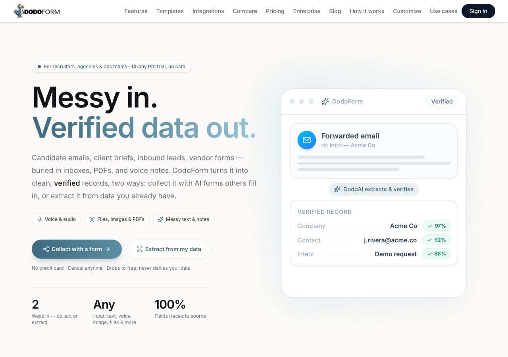
Think aloud: DodoForm landing page. I see 'Collect with a form' and 'Sign in' — I need to sign in first to create a form. Let me hit Sign in.
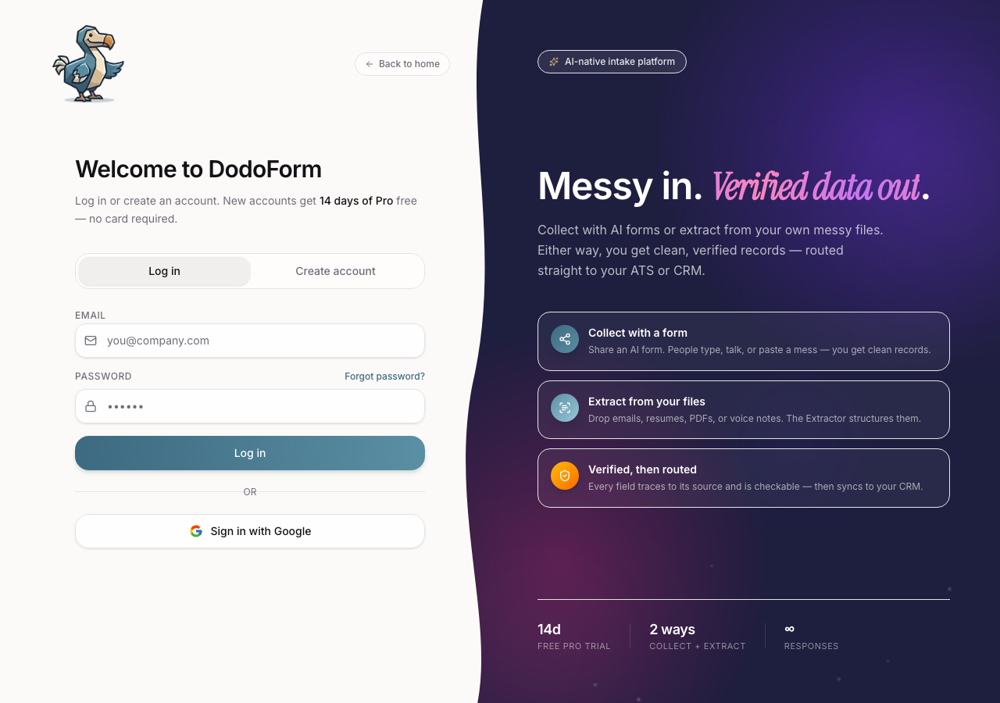
Think aloud: I reached the product login page while this run is configured for Google account state. I need the user to complete Google sign-in before I can evaluate the product.
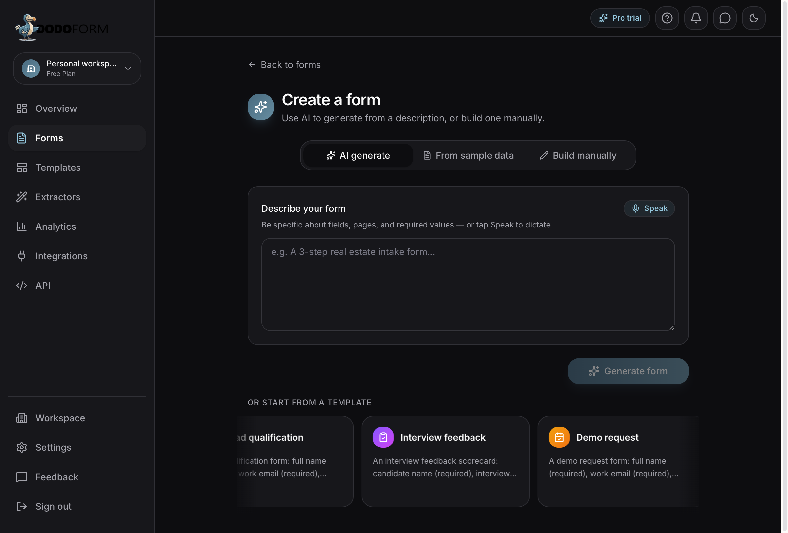
Think aloud: The product is still generating output, so I need to wait for the result instead of exploring away or stopping early.
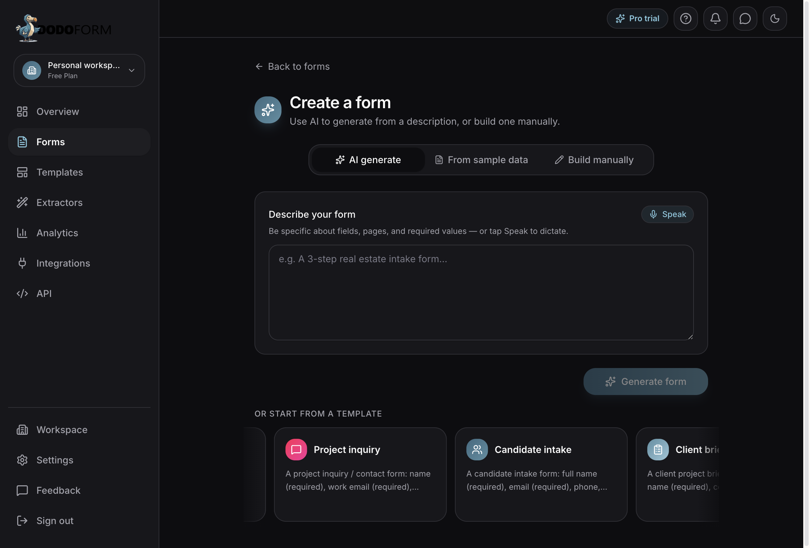
Think aloud: The product is still generating output, so I need to wait for the result instead of exploring away or stopping early.
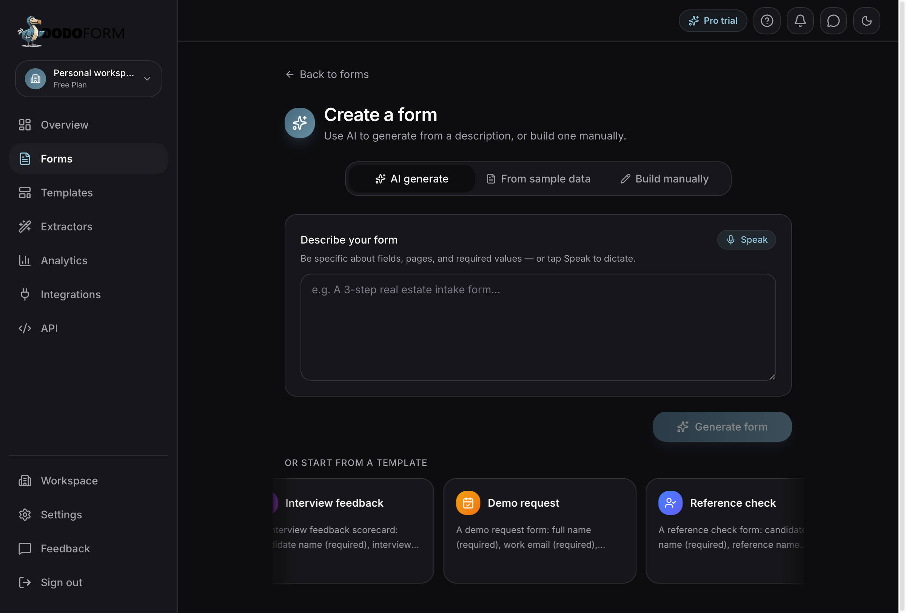
Think aloud: The product is still generating output, so I need to wait for the result instead of exploring away or stopping early.
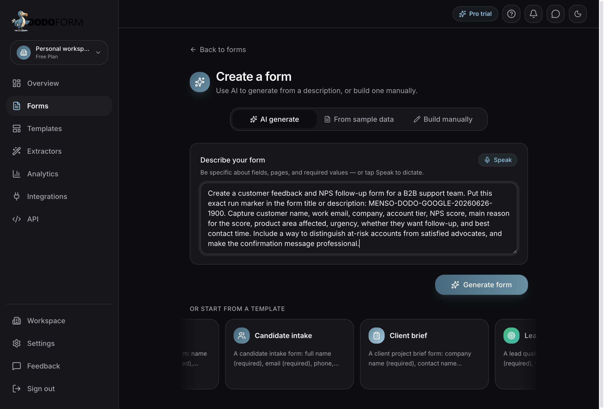
Think aloud: The prompt text is already in the box and Generate form is now active. Clicking it now.
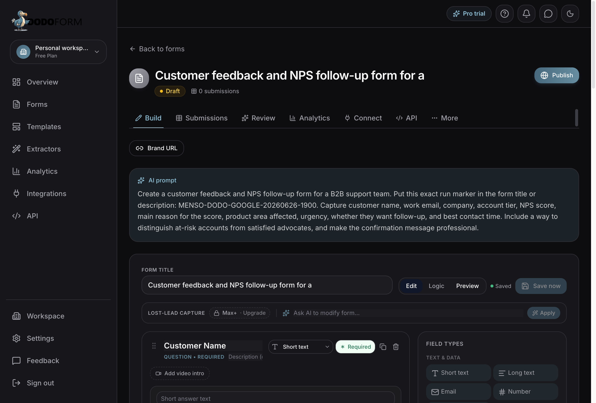
Think aloud: The form generated — I can see 'Customer feedback and NPS follow-up form for a' as the title, and 'Customer Name' and 'Work Email' fields are already there. The AI prompt with the MENSO-DODO-GOOGLE-20260626-1900 marker is visible in the editor. Status shows 'Saved' and Save now is disabled — that means it autosaved. Let me scroll down to check all the fields that were generated.
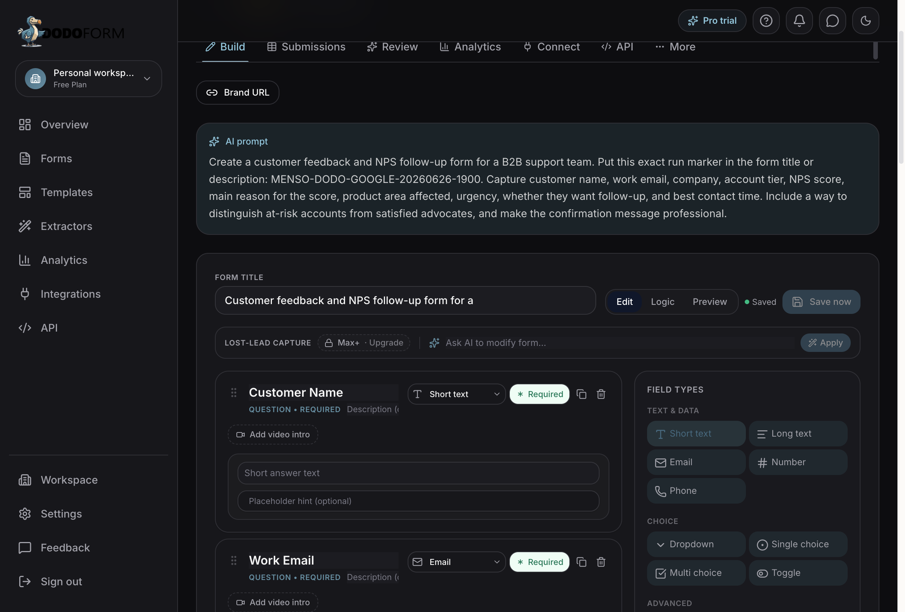
Think aloud: Form is generated — I can see Customer Name and Work Email fields. Need to scroll down to check if NPS score, urgency, at-risk segmentation fields are all there.
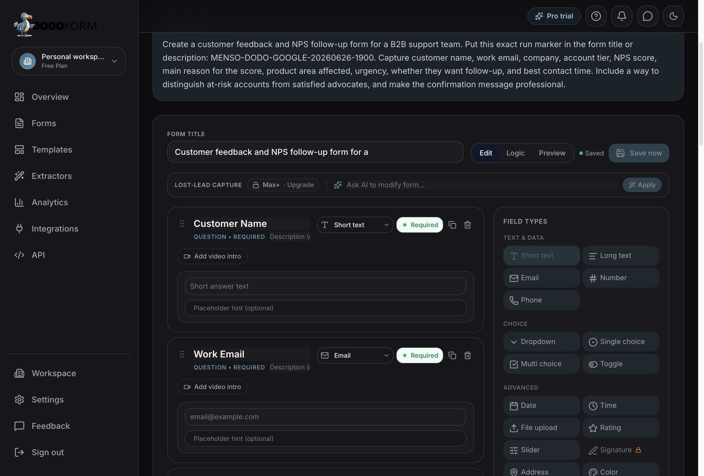
Think aloud: I see Customer Name and Work Email fields — need to scroll down to check if NPS score, urgency, at-risk segmentation, and follow-up fields are all there.
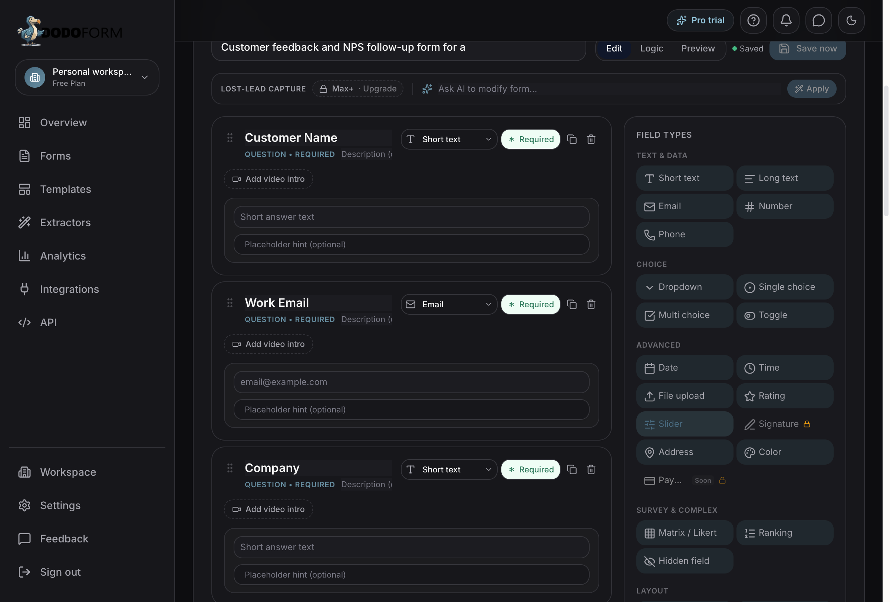
Think aloud: Form is generated and autosaved. I can see Customer Name, Work Email, Company fields. Need to scroll down to verify NPS score, urgency, at-risk segmentation, follow-up fields, and the run marker in the title.
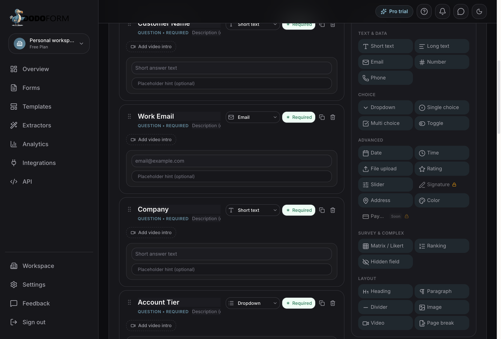
Think aloud: I've been scrolling and the form fields are visible — Customer Name, Work Email, Company, Account Tier. I need to check the form title for the run marker and see NPS/urgency/follow-up fields. Let me scroll up to check the title first.
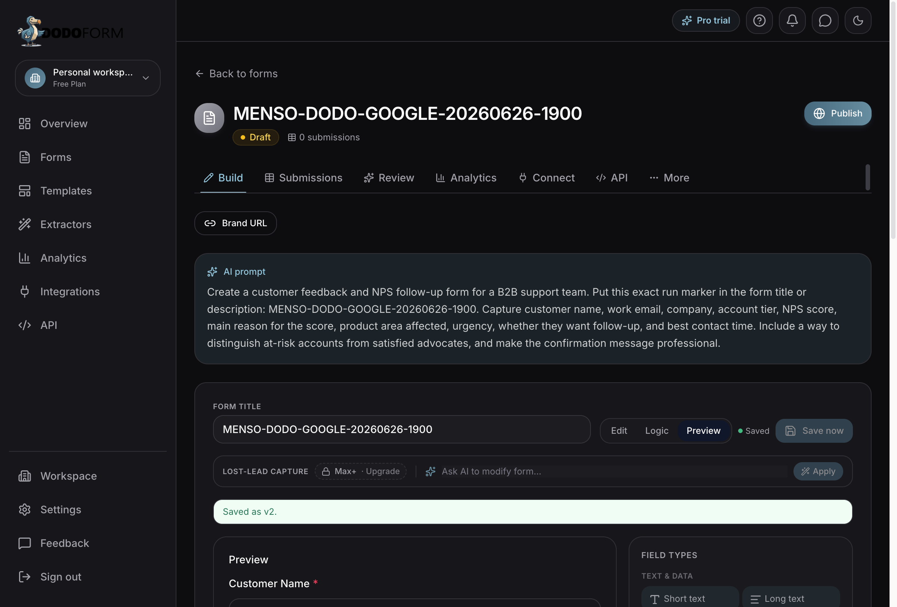
Think aloud: The run marker is right there in the title — MENSO-DODO-GOOGLE-20260626-1900. And I can see all the fields I need: Customer Name, Work Email, Company, Account Tier, NPS Score, reason, Product Area, Urgency, follow-up toggle, best contact time. This actually covers everything. Save now is disabled which means it autosaved. Let me click Preview to see the full form output.

Think aloud: The form title shows the run marker right there — MENSO-DODO-GOOGLE-20260626-1900. Preview tab is active, I can see Customer Name field. Save now is disabled which means it autosaved. Let me scroll down in the preview to check NPS, urgency, follow-up, and the at-risk segmentation fields.
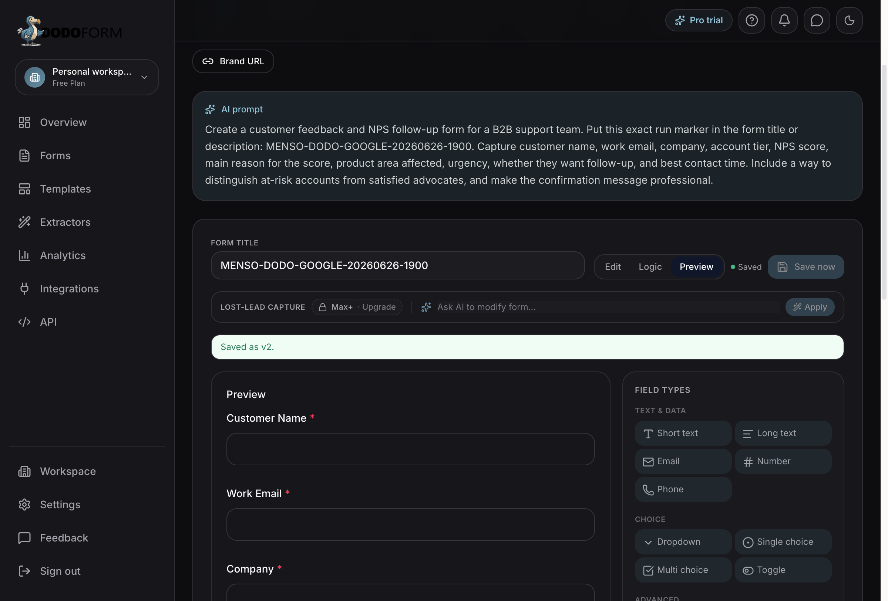
Think aloud: The preview is showing Customer Name, Work Email, Company — all the basics. I can see the form title has the MENSO-DODO-GOOGLE-20260626-1900 marker. There's a 'Preview submit' button offscreen. Let me scroll down in the preview to check the NPS and at-risk fields, then I have enough to decide.
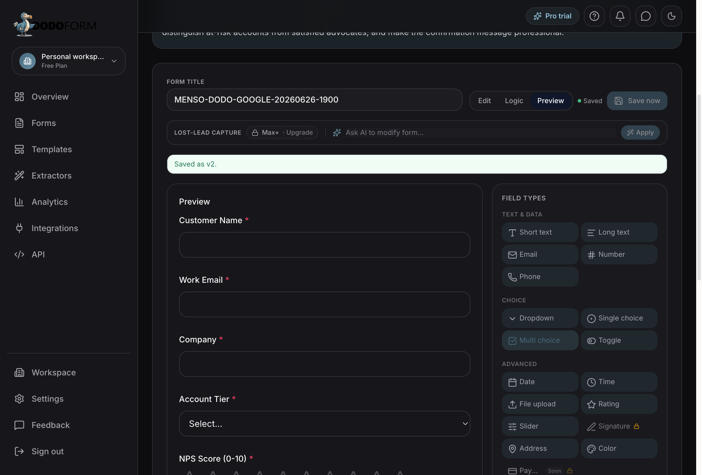
Think aloud: Decision: try. I have enough visible product evidence to finish this evaluation.